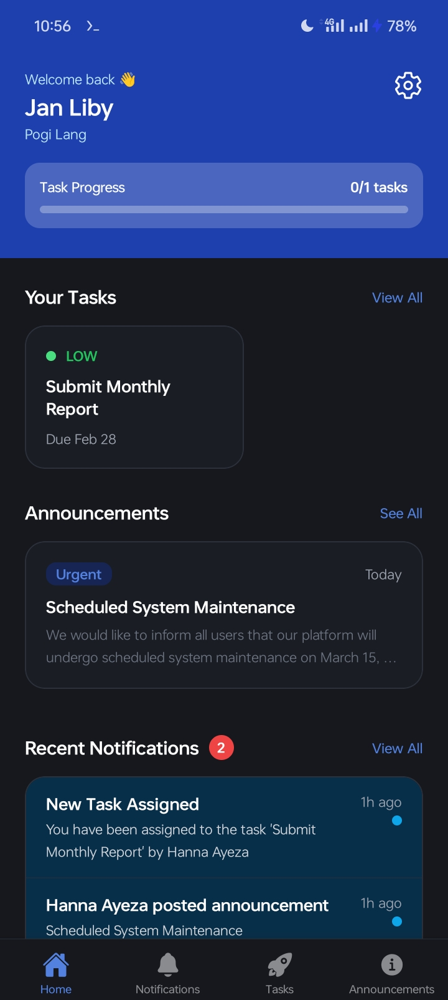
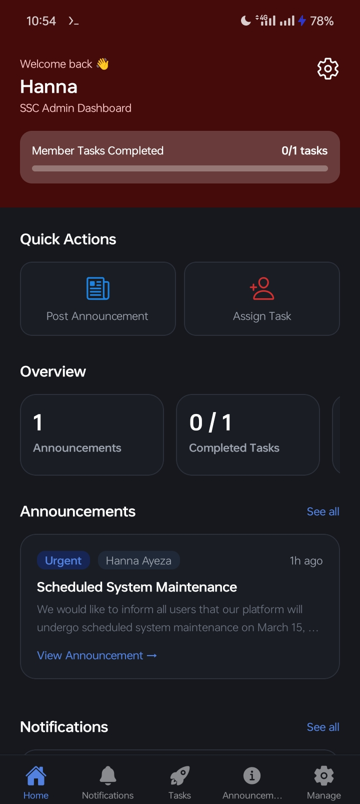
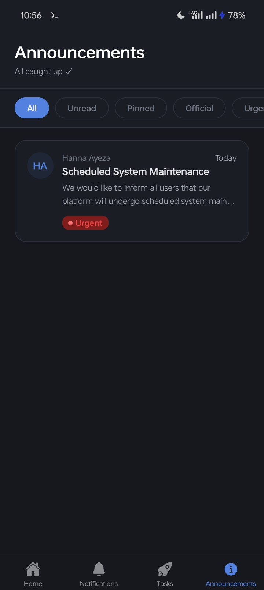
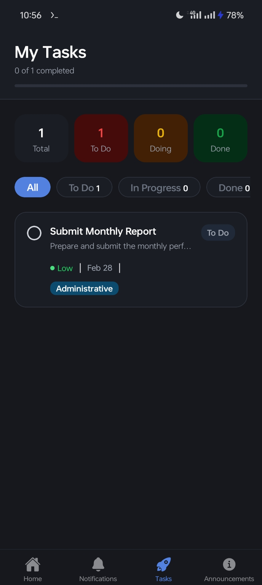
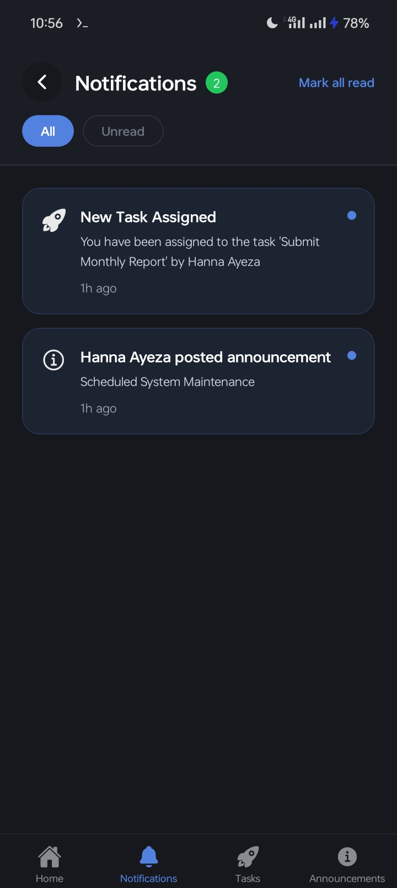

SSC Task Tracker
Version 1.0.0 · February 13, 2026
Built with: React Native
App Preview





About This Version
Task tracker mobile application designed for Supreme Student Council. This mobile app is intended for capstone/research purposes and not fully published.
Download
Changelog
✅ Login, register, reset password and accouunt management features..
✅ Tasks Assign, View, Update and Delete
✅ Announcements Publish, View, Update and Delete
✅ Notifications
✅ Dark Mode theme
✅ Better UI/UX